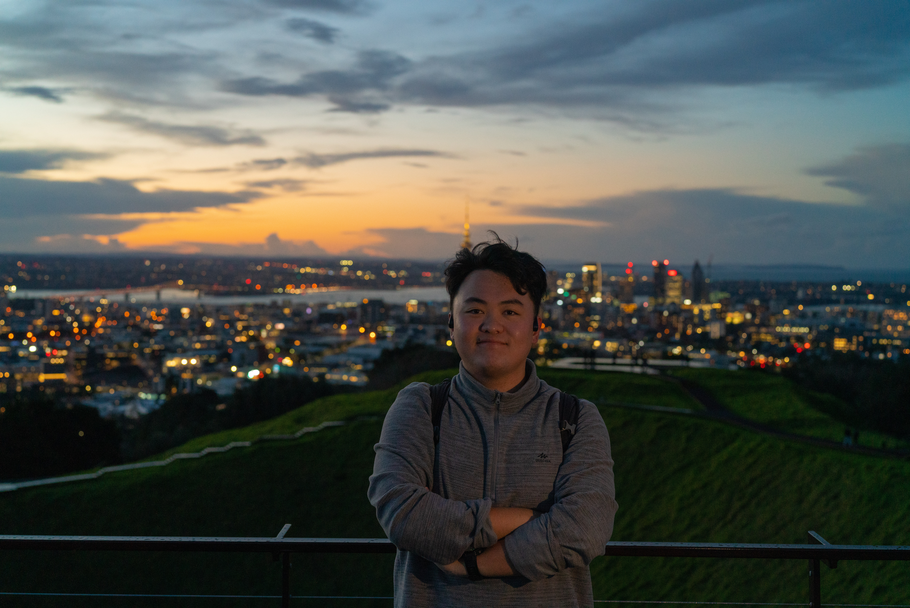
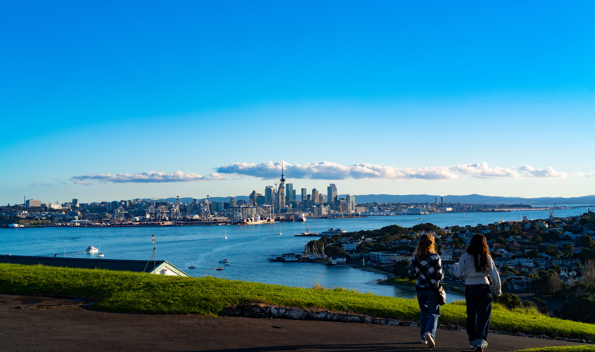
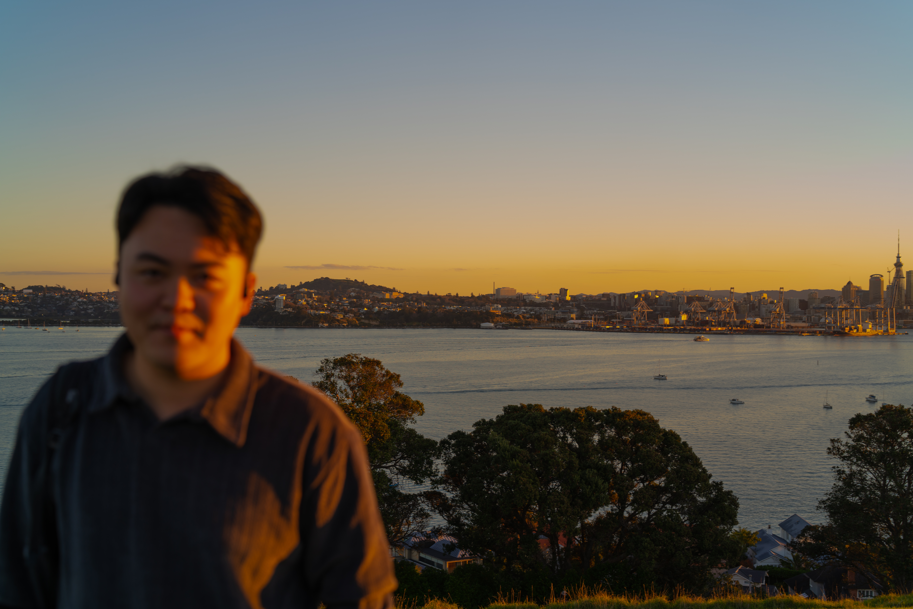

First Moment
第一张放在这里的照片。可以是一处风景，也可以是某个让我停下来的瞬间。
一些照片，一些在路上的瞬间。这里可以记录山、海、城市、日落、朋友， 也记录我看见世界时的心情。
这个页面会慢慢更新。我不想把照片只当作“风景”，更想把它们当作生活阶段的标记： 我在哪里，我看见了什么，我那时正在想什么。

第一张放在这里的照片。可以是一处风景，也可以是某个让我停下来的瞬间。

在路上的时候，人会更容易意识到自己正在经历某个不可重复的阶段。

有时候普通的一束光、一个街角、一段音乐，就足够成为一天的记忆点。

山海和天空总会提醒我，生活不应该只被任务和截止日期填满。

人和人的相遇很短，但有些片段会被照片保存下来。

这个相册还会继续生长，像这个网站本身一样。